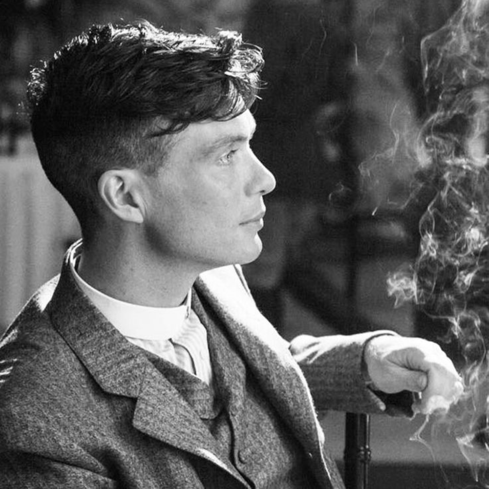
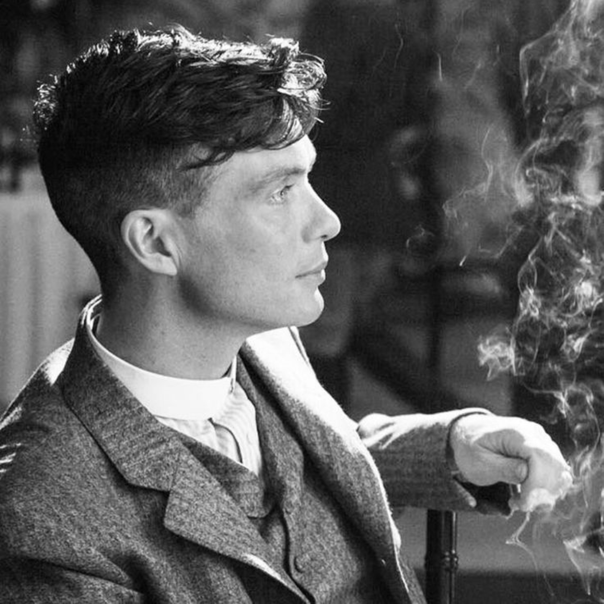

Shelby is a fictional character from the television series "Peaky Blinders." He is portrayed by actor Cillian Murphy. Thomas Shelby is the central character and the leader of the Shelby crime family, based in Birmingham, England, during the aftermath of World War I. He is known for his cunning intelligence, strategic mindset, and ambition. Thomas Shelby is depicted as a charismatic and complex character. He is a war veteran with a troubled past, having served in the First World War. As the head of the Peaky Blinders, a gang known for their razor-blade-tipped caps, Thomas is involved in various criminal activities, including illegal betting, racketeering, and organized crime. He is known for his calculated approach and ability to outmaneuver his rivals. Throughout the series, Thomas Shelby's character undergoes personal and professional challenges, navigating the dangerous world of crime while also dealing with personal relationships, family dynamics, and internal power struggles within the Shelby family. His character evolves and develops over the course of the show, revealing his vulnerabilities, struggles with PTSD, and his determination to protect his family and achieve greater power and influence. Thomas Shelby has become a popular and iconic character, known for his distinctive flat cap, sharp attire, and brooding demeanor. The character's complex personality, moral ambiguity, and his ability to command respect and instill fear have contributed to his enduring popularity among fans of the show.
 
